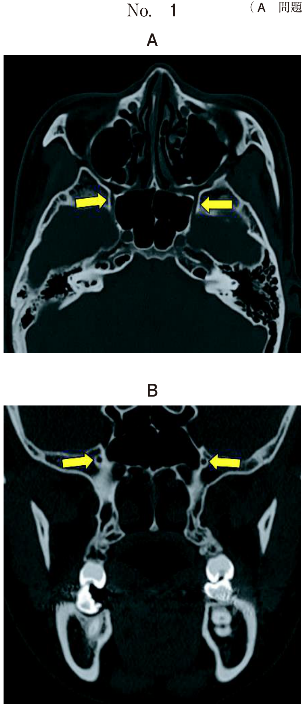
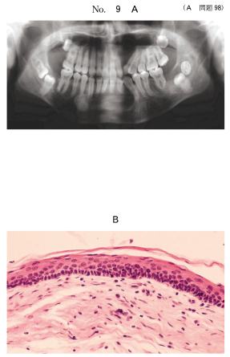
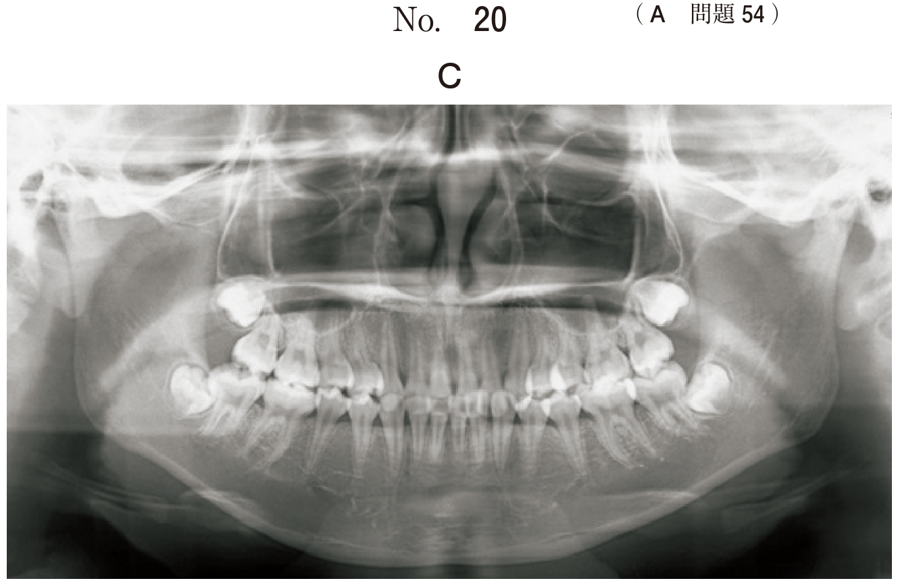
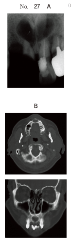
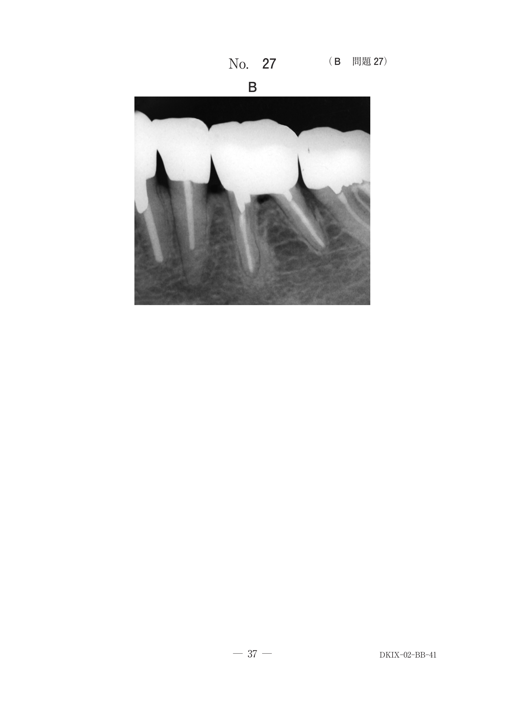

WHO分類に含まれる嚢胞
嚢胞の分類
嚢胞とは、周囲をほぼ完全に組織（嚢胞壁）で囲まれ、その中に種々の液状・半流動状の内容物を入れているものをいう。顎口腔領域での嚢胞発生の頻度はきわめて高く、顎口腔病変の1/4〜1/3を占める。
WHO分類（1992）による顎嚢胞の分類（上皮性）
| 分類 | 嚢胞名 |
|---|---|
| A. 発育性 - 歯原性 | 原始性嚢胞（歯原性角化嚢胞） |
| 歯肉嚢胞（Gingival cyst） | |
| 含歯性嚢胞（濾胞性嚢胞） | |
| 萌出嚢胞 | |
| 歯原性角化嚢胞 | |
| 腺性歯原性嚢胞 | |
| A. 発育性 - 非歯原性 | 鼻口蓋管嚢胞（切歯管嚢胞） |
| 球状上顎嚢胞 | |
| 鼻歯槽嚢胞（鼻唇嚢胞） | |
| B. 炎症性 | 歯根嚢胞 |
- 歯根嚢胞 ○（顎骨内に発生）
- 含歯性嚢胞 ○（顎骨内に発生）
- 鼻口蓋管嚢胞 ○（上顎正中の骨内に発生）
- 鼻歯槽嚢胞 ×（軟組織に発生、骨内ではない）
- リンパ上皮性嚢胞 ×（軟組織に発生）
歯根嚢胞
歯根嚢胞は顎嚢胞の中で最も頻度が高く（50〜60%）、無髄歯の慢性根尖性歯周炎の経過中に歯根尖部に形成される。根尖部周囲にあるMalassezの遺残上皮が炎症刺激で増殖し、嚢胞を形成する。
歯根嚢胞の特徴
- 診断には失活歯の確認が重要
- エックス線像：原因歯根尖に境界明瞭な円形の透過像
- 病理：嚢胞壁は重層扁平上皮で裏装。炎症性細胞浸潤を伴う
- 治療：小さい場合は根管治療のみ。嚢胞摘出術と同時に原因歯の歯根端切除術または抜歯
含歯性嚢胞（濾胞性嚢胞）
含歯性嚢胞（follicular dental cyst）は、埋伏歯のうち歯冠の形成が完了していたものの歯冠を含む嚢胞である。退縮エナメル上皮に由来する。
含歯性嚢胞の特徴
- 好発部位：下顎第三大臼歯が最多、次いで上顎犬歯部（105C48）
- エックス線像：埋伏歯の歯冠を含む境界明瞭な単房性透過像
- 嚢胞の付着部位：歯頸部のセメント-エナメル境に一致（113A43）
- 治療：開窓法による永久歯の萌出誘導、または嚢胞摘出＋埋伏歯抜去
- 含歯性嚢胞は未萌出歯の歯冠を嚢胞腔内に含む
- 嚢胞壁は歯頸部（セメント-エナメル境）に付着する
- 歯根嚢胞（根尖に発生）や原始性嚢胞（歯冠と無関係）と区別する
歯原性角化嚢胞（原始性嚢胞）
歯原性角化嚢胞（keratocystic odontogenic tumor / OKC）は、再発率が高いことで知られる嚢胞である。2005年のWHO分類では「角化嚢胞性歯原性腫瘍」として腫瘍に分類されたが、その後再び嚢胞に戻された。
歯原性角化嚢胞の特徴
- 好発年齢：20〜30歳。下顎臼歯部〜下顎枝に多い
- エックス線像：単房性または多房性の透過像
- 病理：嚢胞壁は錯角化を示す薄い重層扁平上皮で裏装。基底層は柵状配列
- 内容液：角化物（ケラチン）を含む
- 再発の原因：娘嚢胞（satellite cyst）が骨内に残存するため（104A98）
- PTCH1遺伝子の変異が関与
歯原性角化嚢胞の治療
- 開窓術＋摘出・掻爬が基本（114A72）
- 開窓により嚢胞を縮小させてから摘出する（大きい場合）
- 開窓術の利点：歯の保存、下唇の感覚温存（112D75）
- 再発に注意：術後の長期的経過観察が必要
基底細胞母斑症候群（NBCCS / Gorlin症候群）
常染色体優性遺伝。PTCH1遺伝子変異による。以下の3徴を示す。
- 多発性顎嚢胞（角化嚢胞性歯原性腫瘍）
- 多発性基底細胞母斑（皮膚）
- 骨系統の異常（二分肋骨、脊椎異常など）
その他：大脳鎌の石灰化、幅広い鼻根、前額・側頭部の突出など
石灰化嚢胞性歯原性腫瘍
嚢胞壁内に幻影細胞（ghost cell）を認めることが病理学的特徴。内容液中に角化物が含まれることがある。2005年のWHO分類では「石灰化嚢胞性歯原性腫瘍」として腫瘍に分類された。
鼻口蓋管嚢胞（切歯管嚢胞）
鼻口蓋管嚢胞は非歯原性の発育性嚢胞で、上顎正中部の切歯管内に発生する。上顎前歯部正中のハート型の透過像が特徴的。周囲の歯は生活歯であることが鑑別の重要なポイント。
腺性歯原性嚢胞
腺性歯原性嚢胞（glandular odontogenic cyst）は1992年のWHO分類で新たに採用。10〜80歳代に発生。下顎前歯〜臼歯部に好発。エナメル上皮腫様の上皮を呈することがある。
嚢胞の治療法
Partsch I法（開窓法 / 副腔形成術）
嚢胞壁の一部を保存し、切開した口腔粘膜と縫合して嚢胞腔と口腔を交通させる。嚢胞内の圧が減少し、徐々に縮小する。
- 適応：大きな嚢胞、永久歯の萌出誘導が必要な場合
- 利点：歯の保存、神経の温存、侵襲が少ない
- 欠点：治療期間が長い、開窓部の閉鎖防止に装置が必要（108D26）
Partsch II法（嚢胞摘出術）
嚢胞壁を全摘出し、切開した口腔粘膜を完全に縫合して閉鎖する。
- 適応：小〜中等度の嚢胞、根治を優先する場合
- 利点：根治性が高い
- 欠点：大きな嚢胞では骨欠損が大きくなる、感染のリスク
新生児の歯肉嚢胞
新生児や乳児にみられる歯肉嚢胞（gingival cyst of the newborn）は、歯堤の遺残に由来する小さな嚢胞で、自然消退するため経過観察でよい（109B41）。
過去問で実力チェック
顎骨の膨隆を生じるのはどれか。すべて選べ。
b 含歯性嚢胞
c 鼻歯槽嚢胞
d 鼻口蓋管嚢胞
e リンパ上皮性嚢胞
【解説】歯根嚢胞・含歯性嚢胞・鼻口蓋管嚢胞はいずれも顎骨内に発生するため骨の膨隆を生じる。鼻歯槽嚢胞は鼻翼基部の軟組織に発生し、リンパ上皮性嚢胞は口腔底の軟組織に発生するため、顎骨の膨隆は生じない。
含歯性嚢胞の原因歯で最も多いのはどれか。1つ選べ。
b 上顎第二小臼歯
c 下顎第一小臼歯
d 下顎第一大臼歯
e 下顎第三大臼歯
【解説】含歯性嚢胞は埋伏歯の歯冠を含む嚢胞であり、最も埋伏しやすい下顎第三大臼歯（下顎智歯）が原因歯として最多である。次いで上顎犬歯部にも好発する。
下顎臼歯部の顎骨内に発生した嚢胞の模式図（別冊No.5）を別に示す。
含歯性嚢胞はどれか。1つ選べ。

b イ
c ウ
d エ
e オ
【解説】含歯性嚢胞は未萌出歯の歯冠を嚢胞腔内に含み、嚢胞壁がセメント-エナメル境（歯頸部）に付着する。模式図でこの特徴を示すのが「イ」である。歯根嚢胞は根尖部に、原始性嚢胞は歯冠と無関係に発生する。
15歳の女子。エックス線写真（別冊No.9A）と下顎左側大臼歯部の生検時のH-E染色病理組織像（別冊No.9B）とを別に示す。
この疾患の再発に関与するのはどれか。1つ選べ。

b 肉芽組織
c 石灰化物
d 幻影細胞
e 硝子変性
【解説】歯原性角化嚢胞の再発に関与するのは娘嚢胞（satellite cyst）である。嚢胞摘出時に娘嚢胞が骨内に残存すると、そこから再発する。幻影細胞は石灰化嚢胞性歯原性腫瘍の特徴である。
16歳の男子。下顎右側臼歯部の腫脹を主訴として来院した。6か月前に自覚したが、痛みがないためそのままにしていたところ、徐々に増大してきたという。自発痛や下唇の知覚異常は認めない。初診時のエックス線画像（別冊No.29A）と生検時の H-E染色病理組織像（別冊No.29B）を別に示す。
適切な治療はどれか。2つ選べ。


b 皿状形成
c 摘出・掻爬
d 下顎辺縁切除
e 下顎区域切除
【解説】歯原性角化嚢胞の治療は、開窓術により嚢胞を縮小させた後、摘出・掻爬を行うのが基本方針である。嚢胞であるため下顎辺縁切除や区域切除のような骨切除は不要。若年者で歯や神経の温存を考慮する。
51歳の男性。前歯部の腫脹を主訴として来院した。1年前から同部の軽い腫脹に気付いていたが、痛みがないため放置していたという。初診時のエックス線写真（別冊No.27A）とCT（別冊No.27B）とを別に示す。
疑われるのはどれか。1つ選べ。

b 残留嚢胞
c 鼻歯槽嚢胞
d 含歯性嚢胞
e 鼻口蓋管嚢胞
【解説】上顎正中部の切歯管付近に発生した嚢胞で、周囲の歯が生活歯であれば歯根嚢胞は否定される。鼻口蓋管嚢胞（切歯管嚢胞）は非歯原性の発育性嚢胞で、切歯管内の鼻口蓋管の遺残上皮に由来する。ハート型の透過像が特徴的。
3か月の乳児。歯肉の異常を主訴として来院した。全身的には異常所見はない。初診時の口腔内写真（別冊No.41）を別に示す。
適切な対応はどれか。1つ選べ。

b 抗菌薬軟膏塗布
c 副腎皮質ステロイド軟膏塗布
d レーザー焼灼
e 開 窓
【解説】乳児の歯肉にみられる白色小結節は歯肉嚢胞（gingival cyst of the newborn）であり、歯堤の遺残上皮に由来する。自然に消退するため経過観察でよい。治療の必要はない。